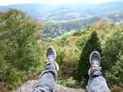

青森、最高！

青森から、無事に戻ってまいりました。今回もサプライズ続出でしたが、嬉しいやつばっかりでした。だから、もう、楽しくて楽しくて！予定通りの場所（十和田周辺の遺跡や神社、奥入瀬渓流、白神山地、岩木山、八甲田山）にプラスして三内丸山遺跡、梵珠山、タラぽっき温泉などなどを巡りました。
さらに、十和田神社の奥も奥に「占い場」という場所があるのですが、そこへ行こうとした瞬間、びっくりするような出会いもありました（詳しくはまた「旅の記憶」に書きますね」。ホント、すごいなあ、こういう偶然って・・・。
白神山地をはじめ、青森の山と森は、とにかく心地よい場所でした。目で楽しむ景色だけじゃなくて、体中で感じる音や光と影、それらの交じり合った空気の密度っていうのかな、その濃さがちょうどいいんですね。季節は僕の大好きな秋。冬の足音も聴こえてきている山の息遣いを存分に味わえました。本当に楽しかった。
そして、僕の携帯電話は、ほぼずっと圏外になっていたのも嬉しかった（僕は電話が苦手なので。最近、僕の携帯電話はますますおかしくなってきてます。明日、そのことは書きますね・笑）。
写真は石の遺跡の上から撮ったものです。しばらく寝っ転がって目を閉じ、森に響いている音を感じていました。はあ、最高だ～！